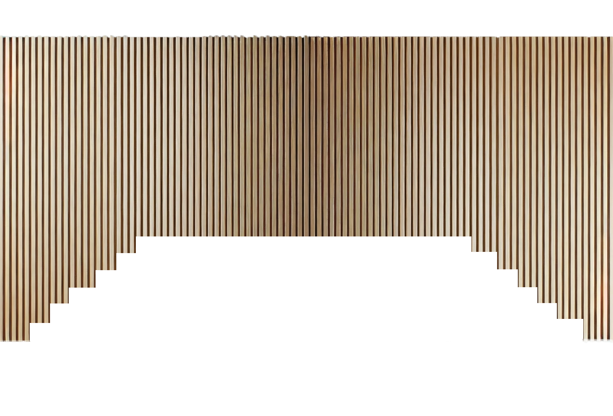
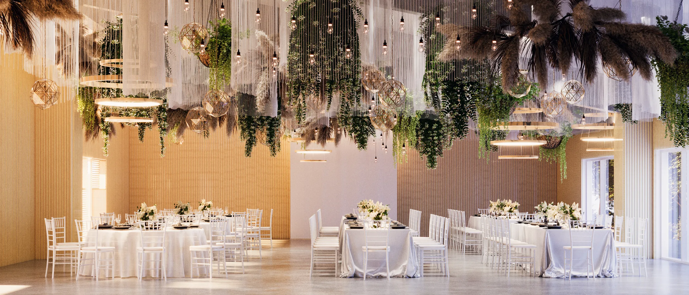

Știm că ai un vis...
Știm că ai un vis Mai știm și că acesta este important pentru tine, iar din acest vis, îți rămân pentru totdeauna amintiri, poze, filmări și nu în ultimul rând, sentimente… De aceea, Ambio Events a creat un loc special pentru îndeplinirea acestor visuri, un loc pentru evenimente ALTFEL, pentru și cu oameni faini. Un spațiu pentru socializare, relaxare și împlinirea dorințelor tale. Îți propunem pentru primul dans în doi, sub ochii fericiți ai familiei și ai prietenilor, o sală cu design nordic, minimalist și avangardist. Într-o așezare intimă, înconjurată de pădure, liniște și aer curat, cu o capacitate de 150 de invitați, ring de dans, bar și unități de cazare, Ambio Events conturează pe malul lacului Ezăreni ambianța mult dorită. Îți punem la dispoziție un spațiu în culori inspirate din natură, ce transmite prospețime și calmitate, spațiu ce poate fi decorat cu dans și voie bună. Continuând în aceeași atmosferă, ajungem în grădină – un loc unic, inedit, plin de verde și culori pale care subliniază și mai mult sentimentul de entuziasm și relaxare. Vă propunem grădina Ambio pentru cununia civilă, pe malul lacului, un loc amenajat cu accente de design elegante și rafinate. De asemenea, am amenajat în gradină un foișor, unde elementele naturale se împletesc cu obiecte de mobilier. O masă lungă din lemn, într-un cadru italian – toscan, unde eleganța se întâlnește cu căldura și apropierea de natură, aceasta fiind piesa centrală pentru evenimentele pe timp de zi. Iar pentru ca totul să fie perfect în ziua voastră specială, am contractat exclusiv furnizori de excepție pentru mâncărurile pe care le puteți servi în timpul evenimentului. Colaboratorii noștrii produc 90% din preparatele culinare din ingrediente naturale, obținute din fermele proprii. Așadar, ne dorim să facem parte din povestea voastră, din visul vostru și să-l facem să devină realitate. Pășește alături de noi într-un loc cu adevărat aparte, nu doar datorită amplasamentului deosebit, ci și a oamenilor care îl îmbogățesc prin experiența lor în crearea de evenimente altfel, prin gândirea în afara tiparelor și dorința de a prezenta ceva cu totul nou. Doar visează, spune-ne și noi vom da viață gândurilor tale. PS – Bine ai venit în lumea evenimentelor AMBIO!